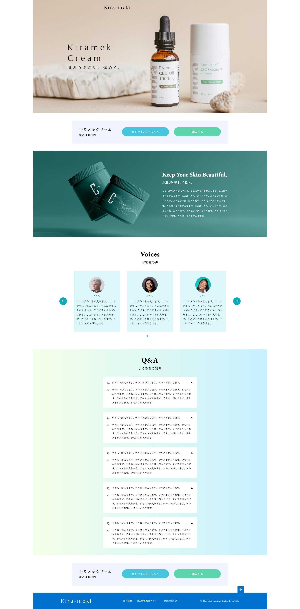
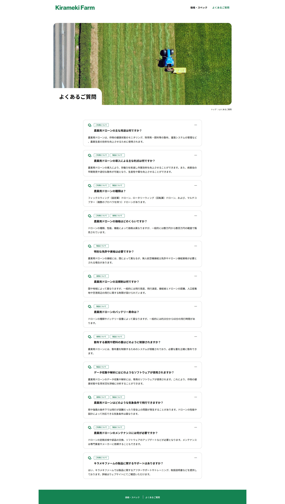

Profile
自己紹介
WebコーダーのTanakaです。 大学卒業後、金融機関に勤務し、家族の転勤を機に退職。その後、数年間は営業事務の仕事をしてきました。 これまでの経験を活かし、責任感を持って丁寧に仕事に取り組む姿勢を大切にしています。 現在はインターネットアカデミーでWeb制作を学びながら、HTML・CSS・JavaScriptを使ったWebサイト制作に取り組んでいます。
What I can do
私にできること
Webサイトの設計からコーディングまで、一貫して丁寧に対応いたします。デザインカンプの正確な読み取りをもとに、意図を汲み取ったコーディングを得意としています。
HTML / CSS
スマートフォンやパソコンなど、どの端末でも見やすく快適に表示される「レスポンシブデザイン」に対応したWebページを作成しています。検索サイトで見つけてもらいやすくするための工夫（SEO）や、Webのルールに沿った正確なコードを書くことを大切にしています。デザインの再現はもちろん、「見やすさ」「使いやすさ」「ページが早く表示されること」を意識した、安心して使っていただけるWebページを目指しています。
JavaScript / jQuery
Webページにふわっと表示が切り替わる動きや、ボタンを押すとスムーズに画面が変わるような「アニメーション」や「動きのある仕組み」を作ることが得意です。JavaScriptやjQueryというプログラムを使い、楽しく、わかりやすく、使いやすいWebページを目指しています。
Photoshop / Adobe XD / Figma
Photoshop、Adobe XD、Figmaなどのデザインツールを使用し、コーディングに必要な情報を正確に読み取ることができます。 また、画像やアイコンなどの素材も、Webに適したサイズ・形式で正しく書き出すことが可能です。デザインの意図をしっかり理解し、スムーズで正確な実装に繋げることを心がけています。
works
制作実績
-
-

-
-
-
-

contact
お問い合わせ
ご質問やお仕事の依頼などお気軽にお問合せくださいませ。
これまでに制作したレスポンシブデザインのウェブページの一例です。HTML/CSS/jQueryを使用して制作しました。